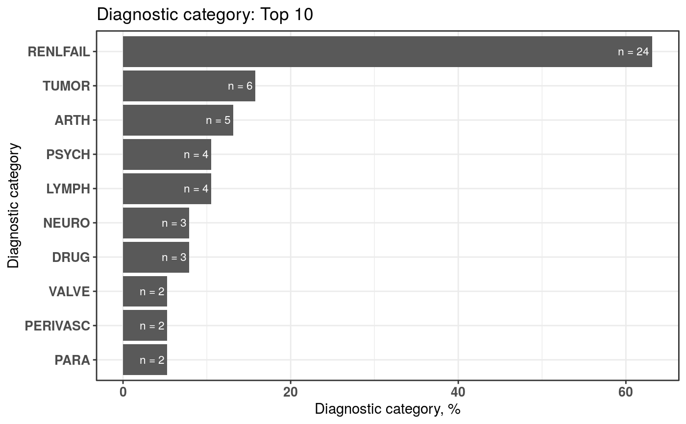
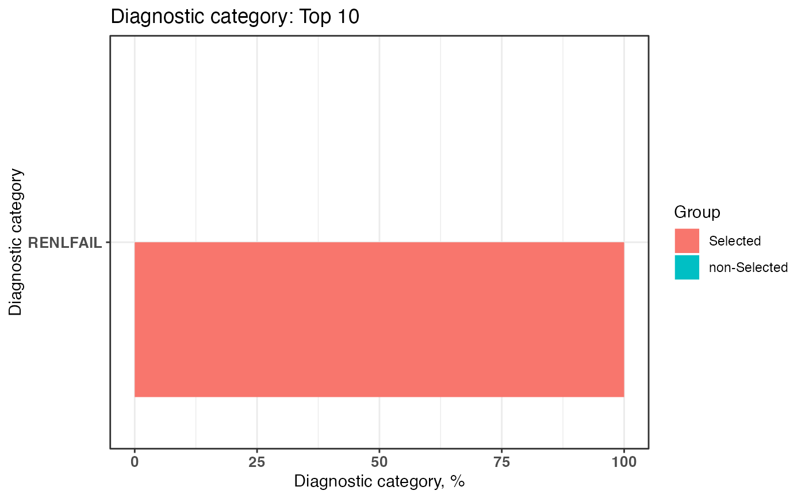

Histogram plot of diagnostic categories
plotDiagCat(
groupedDataWide,
idColName,
groupColName = NULL,
topN = 10,
limitFreq = 0.01,
pvalue = 0.05
)Wide table of data frame (generated from groupedDataLongToWide function).
Numeric. Default is 10 (Top 10; 10 most common wrong ICD).
Numeric. minimum frequency shown (frequency below this threshold will not be shown in plot). Default is 0.01. In other words, the threshold is 1 percent patient among total patients been diagnosed in the same diagnostic category.
Numeric. p value of chisq.test. Default is 0.05.
A histogram plot and a data.table of summarized classified data.
This function provides an overview of grouping category of the diagnostic code in histogram plot. User can observe the proportion of diagnostic categories in their dataset through this function. Also, Chi-square test and Fisher’s exact test are also included in this function. User can test if the proportion of each diagnostic category in case group and control group are statistical significantly different.
Other plot function: plotICDError
# sample file for example
head(sampleDxFile)
#> ID ICD Date Version
#> 1: A2 Z992 2020-05-22 10
#> 2: A5 Z992 2020-01-24 10
#> 3: A8 Z992 2015-10-27 10
#> 4: A13 Z992 2020-04-26 10
#> 5: A13 Z992 2025-02-02 10
#> 6: A15 Z992 2023-05-12 10
# Create a grouped data
ELIX <- icdDxToComorbid(dxDataFile = sampleDxFile,
idColName = ID,
icdColName = ICD,
dateColName = Date,
icd10usingDate = "2015/10/01",
comorbidMethod = elix)
#> Wrong ICD format: total 9 ICD codes (the number of occurrences is in brackets)
#> c("A0.11 (20)", "E114 (8)", "Z9.90 (6)", "F42 (6)", "001 (5)", "75.52 (4)", "755.2 (3)", "123.45 (3)", "7552 (2)")
#>
#> Wrong ICD version: total 7 ICD codes (the number of occurrences is in brackets)
#> c("V27.0 (18)", "A01.05 (8)", "42761 (7)", "V24.1 (6)", "A0105 (5)", "E03.0 (4)", "650 (4)")
#>
#> Warning: The ICD mentioned above matches to "NA" due to the format or other issues.
#> Warning: "Wrong ICD format" means the ICD has wrong format
#> Warning: "Wrong ICD version" means the ICD classify to wrong ICD version (cause the "icd10usingDate" or other issues)
head(ELIX$groupedDT)
#> Short ID ICD Date Comorbidity
#> 1: Z992 A2 Z992 2020-05-22 RENLFAIL
#> 2: Z992 A5 Z992 2020-01-24 RENLFAIL
#> 3: Z992 A8 Z992 2015-10-27 RENLFAIL
#> 4: Z992 A13 Z992 2020-04-26 RENLFAIL
#> 5: Z992 A13 Z992 2025-02-02 RENLFAIL
#> 6: Z992 A15 Z992 2023-05-12 RENLFAIL
# Convert long format of grouped data into wide binary format
groupedDataWide <- groupedDataLongToWide(ELIX$groupedDT,
idColName = ID,
categoryColName = Comorbidity,
dateColName = Date)
# plot of top 10 common grouped categories and a list of the detail of grouped categories
plot1 <- plotDiagCat(groupedDataWide = groupedDataWide,
idColName = ID,
topN = 10,
limitFreq = 0.01)
plot1
#> $graph

#>
#> $sigCate
#> DiagnosticCategory N Percentage
#> 1: RENLFAIL 24 63.16
#> 2: TUMOR 6 15.79
#> 3: ARTH 5 13.16
#> 4: LYMPH 4 10.53
#> 5: PSYCH 4 10.53
#> 6: DRUG 3 7.89
#> 7: NEURO 3 7.89
#> 8: PARA 2 5.26
#> 9: PERIVASC 2 5.26
#> 10: VALVE 2 5.26
#>
# Select case with "Diseases of the urinary system" by level 2 of CCS classification
selectedCaseFile <- selectCases(dxDataFile = sampleDxFile,
idColName = ID,
icdColName = ICD,
dateColName = Date,
icdVerColName = NULL,
icd10usingDate = "2015/10/01",
groupDataType = ccslvl2,
caseCondition = "Diseases of the urinary system",
caseCount = 1)
#> Wrong ICD format: total 9 ICD codes (the number of occurrences is in brackets)
#> c("A0.11 (20)", "E114 (8)", "Z9.90 (6)", "F42 (6)", "001 (5)", "75.52 (4)", "755.2 (3)", "123.45 (3)", "7552 (2)")
#>
#> Wrong ICD version: total 7 ICD codes (the number of occurrences is in brackets)
#> c("V27.0 (18)", "A01.05 (8)", "42761 (7)", "V24.1 (6)", "A0105 (5)", "E03.0 (4)", "650 (4)")
#>
#> Warning: The ICD mentioned above matches to "NA" due to the format or other issues.
#> Warning: "Wrong ICD format" means the ICD has wrong format
#> Warning: "Wrong ICD version" means the ICD classify to wrong ICD version (cause the "icd10usingDate" or other issues)
# Convert the long format of grouped data into a wide binary format with selected case
groupedDataWide <- groupedDataLongToWide(ELIX$groupedDT,
idColName = ID,
categoryColName = Comorbidity,
dateColName = Date,
selectedCaseFile = selectedCaseFile)
# plot of top 10 common grouped categories and a list of the detail of grouped categories
plot2 <- plotDiagCat(groupedDataWide = groupedDataWide,
idColName = ID,
topN = 10,
limitFreq = 0.01,
pvalue = 0.05,
groupColName = selectedCase)
plot2
#> $graph

#>
#> $sigCate
#> DiagnosticCategory Group N Percentage
#> 1: RENLFAIL non-Selected 0 0
#> 2: RENLFAIL Selected 24 100
#>